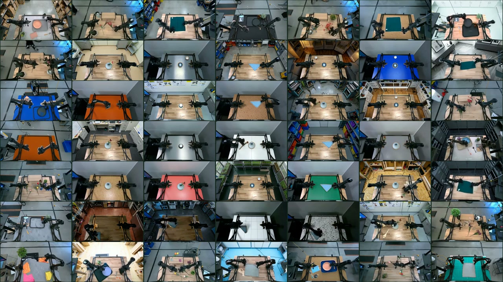
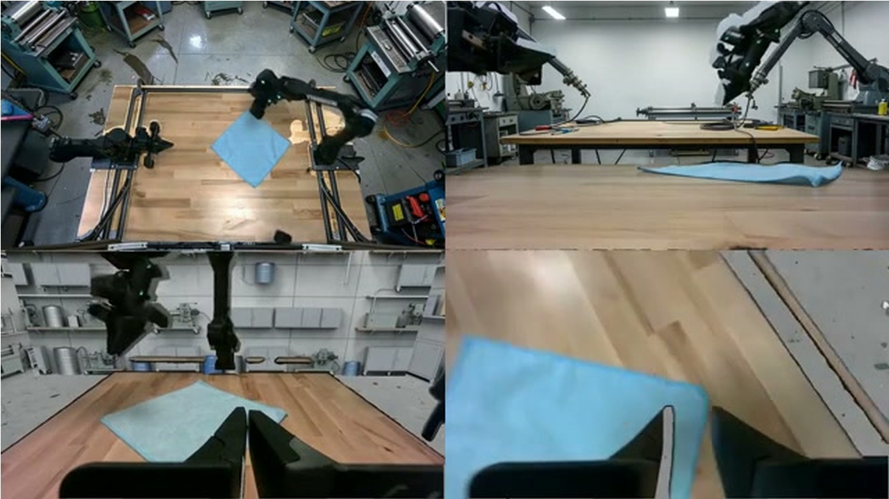
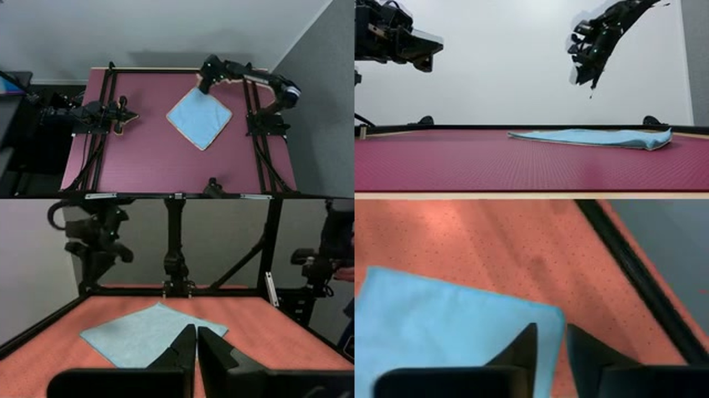

Augmenting real demonstrations.
The wall expands to show room and table edits across our recordings. Look at the robot: it follows the original demonstration, folding the towel, placing the cup, or inserting the flower. Each tile brings together four synchronized views, with the high and low fixed cameras above and both wrists below.

Plays here as you scroll. Drag the timeline to rewind.
How does this work?
The recorded actions only make sense if the robot and the objects it handles remain unchanged. That gives us a boundary for the edit: preserve those regions, then change the surroundings or the table surface.
Start with what must stay.
A mask marks the pixels to preserve. For towel folding, that means the towel and robot, including the grippers. After rendering the new setting, we place these original pixels back over it.
Recorded joint angles tell us how to position the robot’s 3D model; camera calibration tells us where it appears in each image. Projecting that model gives us the robot mask. The task instructions guide segmentation of the objects and tabletop.

Give the cameras one room to look at.
A wrist camera can look down at the table, then turn toward the ceiling as the arm moves. Those views need to belong to the same room.
We reduce the room to six faces: a floor, a ceiling, and four walls. An image for each face, plus a static image of the working area, gives us a scene to reuse. Each fixed camera reuses its rendered background. For each wrist frame, the recorded camera pose tells us how to render a view of that same scene.
Plays here as you scroll. Drag the timeline to rewind.
In this example from the paper, all four cameras look into the generated room from their recorded poses.

High fixedLow fixedLeft wristRight wristAnchor the new texture to the table.
For a surface edit, we project a generated texture onto the calibrated table plane, so it stays attached to the surface as the wrists move. The protected robot and task objects go back over the rendered texture.

High fixedLow fixedLeft wristRight wristThe full pipeline
Robot-mesh projections and SAM 3 segmentation identify the protected foreground. To recover the static scene, we exclude those pixels from sampled frames and take the median at each image location. This reference guides FLUX.2-klein-4B, which generates a working-area image and a six-image cubemap. We render these assets through the recorded camera poses and composite the original foreground over them.

Efficiency.
Thirty minutes of video takes 28 minutes to augment.
Once we have the scene, a longer recording adds rendering and compositing work. It does not require another round of generation for every frame. The same assets serve the fixed cameras and both moving wrists.
Keep the generated appearance for the full recording.
Render from the camera pose and restore the protected pixels.
Some segmentation work can be shared too. We reuse stable fixed-camera surface masks and estimate some masks by tiling four frames into one image. Wrist-camera objects still need a separate mask for each view and frame.
For the benchmark, we used 104 cup demonstrations totaling 30 minutes, with four camera streams on one node with eight H100s. The complete Augmentron pipeline took 0.47 hours. RoboEngine, a generative augmentation baseline, took 8.14 hours with the same data and hardware.
Timing scope and Cosmos-Transfer1
The clock starts with cold model construction and stops after the local output audit. Queueing, container-image retrieval, credential and GPU gates, artifact staging, inter-boot delays, and publication fall outside this measurement.
A single-view Cosmos-Transfer1 run took 10.31 hours. Extrapolating its per-view stages gives 23.79 hours for four views. The paper reports that estimate separately from the measured runs.
Does the robot improve?
None of the above matters unless the robot improves.
Our dataset contains 1,793 real demonstrations, or 9.16 hours, across placing a cup on a saucer, folding a towel, and inserting a flower into a vase. For each task, we fine-tuned a separate policy from π0.5, a pretrained robot model. Augmentron processes all four camera streams; the policies see the high fixed view and both wrists.
The controlled experiment replaces half the training data with edits: 50% real demonstrations, 25% room edits, and 25% surface edits. Every source demonstration appears once. This keeps data volume and the 30,000-update training schedule matched to real-only training. We then test both policies in the original setup, with unrelated objects added, and with reflective steel covering the wooden surface.
Original setup
Where the data was collected
Added distractors
Same task, extra objects
Steel surface
Wood replaced with reflective steel
The largest pooled gain appears in the distractor test: success rises from 18.0% to 45.3%, or 27.3 percentage points. We didn’t explicitly insert distractors during augmentation. The room and surface edits appear to help the robot handle added clutter too.
Looking at individual tasks changes the picture. All three improve with distractors and on steel, but cup placement in the original setup falls from 86% to 72%. The pooled improvement hides that tradeoff.
The paper also tests recipes that keep the full real corpus and add augmented data. Their volumes differ, so the full results below need to be read with those differences in mind.
Task results and larger recipes
Same volume. Real only and Augmentron 50/50 use 1× data volume and the same 30k-update schedule. For 50/50, disjoint source-episode halves supply the real and edited data, keeping every demonstration represented once.
Larger recipes. At 45k updates, Augmentron uses 3× data volume, while RoboEngine and Masked Noise each use 2×. RoboEngine generates visual edits. Masked Noise applies static, pixelation, blur, blackout, or color jitter outside protected regions. These runs compare complete recipes; they leave the effects of data volume and individual pipeline components unresolved.
Exploratory checkpoint. The 30k Augmentron 33/67 checkpoint belongs to a run scheduled for 45k updates. It raises pooled distractor success from 45.3% to 50.7% relative to 50/50 at 30k, while success falls in the original setup and on steel. With both data volume and the decay schedule changed, this comparison cannot establish a scaling trend.
Cameras and trials. The pipeline processes two fixed and two wrist streams; policies observe the high fixed view and both wrists. Operators manually reset the starting configurations, which are unpaired across models. Rollout progress ranges from 0 to 3, and only 3 counts as success.
On a small screen, scroll the table sideways.
| Updates | Recipe | Volume | Task | Original | Distractors | Steel |
|---|
What two prototype trials look like.
The real-only policy makes partial progress. The policy trained with augmented data completes the task. The clips show the behavior from different manually reset starting configurations. For the full evaluation, look to the chart above.
Real onlyIncomplete, progress score 1 of 3
Real + augmentedComplete, progress score 3 of 3
There’s still a lot of work to do here.
Three tasks and three visual conditions give us a useful first test. With one training seed per task and recipe, we still need to learn how much these results vary across training runs. The pipeline also depends on camera calibration, robot geometry, and usable masks. Its edits broaden the visual settings around a behavior we already recorded.
I’d next like to see what happens when this data goes into pretraining or midtraining. These experiments only test fine-tuning. Can the same reuse of recorded behavior help at that larger scale?